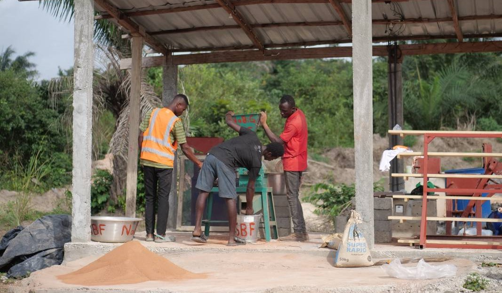

Installation of a solar panel system for our partner school
In collaboration with our partner school, the St. Luke Vocational School in Ghana, the 11th grade intend to install a solar panel system to ensure the school's self-sufficient power supply.
This initiative will also offer the vocational school students a practical opportunity to learn about the innovative technology of solar energy.
The school can power approximately five classrooms from early morning until evening through the solar panel system.
energy transition
The climate-friendly technology results in reduced CO2 emissions. Given the intense sunshine in Ghana, the solar panel system is particularly profitable
practical experience
Electrical engineering students gain hands-on experience with future technology.
The organisation naBiG
To make this project a reality, we've teamed up with the non-profit organization naBiG e.V. (Sustainable Building in Ghana).
With engineers like David Bittner onboard, they offer valuable experience in solar panel installation.

naBig develops sustainable building solutions in Ghana, with an emphasis on sustainable brick production.
Furthermore, they actively educate young adults on sustainable construction practices, prioritizing both theoretical understanding and hands-on application of the concepts learned.
How do we fund our project?
In November, we introduced our project at a school event, sparking keen interest among parents. Through flyer distribution and the sale of homemade chocolates, we received many donations.
In May, a cable collection drive at the marketplace yielded substantial contributions, totaling €2,574.26.
flyer/ more information
To spread awareness about our project, we made a flyer and handed it out, including at events like the Advent kickoff.